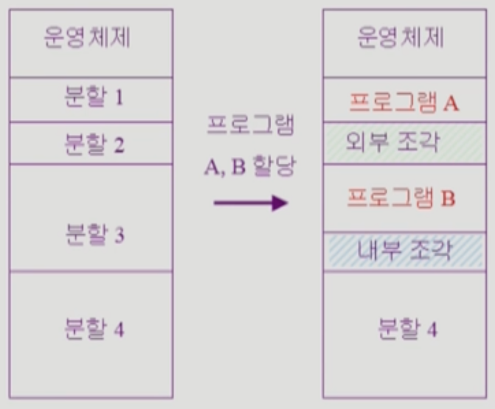
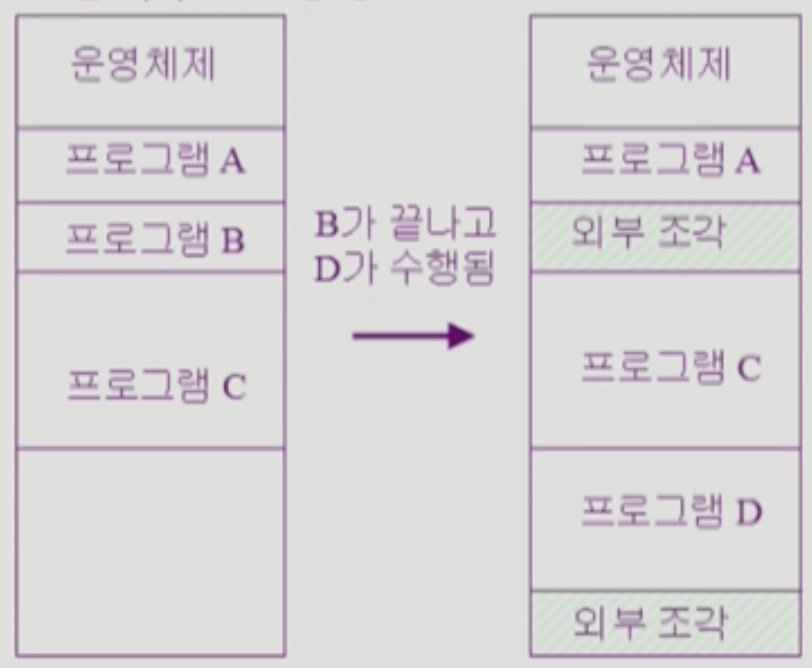
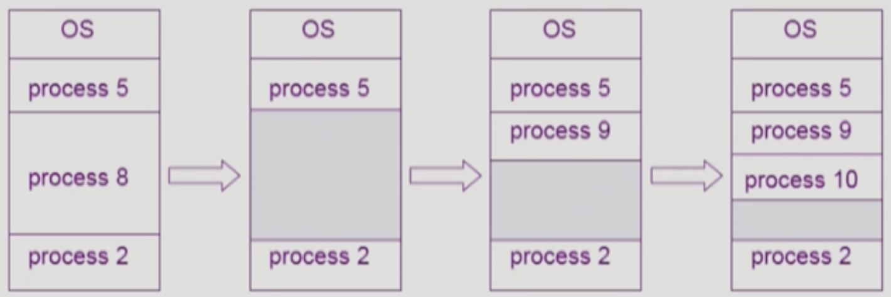

이화여자대학교 컴퓨터공학과 반효경 교수님의 "운영체제 (KOCW)" 강의를 필기한 내용입니다.
다소 잘못된 내용과 구어적 표현 이 포함되어 있을 수 있습니다.
Memory Section
- 앞서 배운것 처럼
- 메모리의 하위 주소는 OS 영역으로 커널 코드가 드가게 되고
- 상위 주소는 사용자 프로세스 영역으로 사용자 프로세스들이 적재된다
Contiguous Allocation
- Contiguous Allocation 은 프로세스 전체를 그냥 메모리에 때려박는 것을 의미한다
Fixed Partition (고정 분할 방식)

- _고정 분할 방식_은 메모리 공간을 사이즈별로 미리 분할해놓고 프로세스를 나눠놓은 공간에 집어넣는 것을 의미한다
- 사이즈가 작은 것부터 시작해서 나눠 놓은 공간에 프로세스가 드갈 수 있으면 거기 넣고 아차 싶으면 다음 공간 따라서 찾은 다음에 드갈 수 있는 데에다가 넣는 방식
- 이때 프로세스들 사이사이에 사용되지 않은 부분을 External Fragmentation (외부 조각) 이라 하고
- 하나의 분할 내에서 사용되지 않은 부분을 Internal Fragmentation (내부 조각) 이라 한다
Variable Partition (가변 분할 방식)

- 솔직히 분할을 미리 나눠놓고 넣는 방식은 너무 비효율적이자네
- 그래서 공간을 분할하지 않고 일단 프로세스를 차례차례 넣어놓는 방식을 _가변 분할 방식_이라 한다
- 이때에는 External Fragmentation 만 발생한다 → 분할이 따로 존재하지 않기 때문에 프로세스가 종료되면 사이사이에 빈공간이 남게 되는 것
- 가변 분할 방식에서 External Fragmentation 을 Hole 이라고도 한다

- 운영체제는 프로세스가 할당되어 있는 공간과 비어있는 공간인 Hole 들에 대한 정보를 관리하고 프로세스를 적재할 때 활용하게 된다
- 즉, 프로세스가 종료되면 Hole 에 포함시키고 프로세스가 적재될 때에는 드갈 수 있는 Hole 을 하나 골라서 적재하게 되는 것
Dynamic Storage Allocation Problem
- 이건 Hole 들 중에서 어떤 Hole 에 프로세스를 적재시킬지 결정하는 알고리즘들을 일컫는다
- First Fit: Hole 들을 순차탐색하다가 프로세스가 드갈 수 있는 첫번째 Hole 에다가 넣음
- 장점: Hole 을 탐색하는 시간이 적게 걸림
- 단점: 해당 Hole 이 최선의 선택이 아닐 수 있음
- Best Fit: 프로세스가 드갈 수 있는 Hole 들 중에 가장 작은 Hole 에 넣음
- 가장 작은 Hole 에 넣기 때문에 더 작은 Hole 이 생길 수 있으므로 작은 Hole 들이 많이 생긴다
- 장점: 최적의 Hole 에 넣을 수 있음
- 단점: Hole 을 탐색하는 시간이 오래걸림
- Worst Fit: 프로세스가 드갈 수 있는 Hole 들 중에 가장 큰 Hole 에 넣음
- 가장 큰 Hole 에 넣기 때문에 큰 Hole 들이 많이 생긴다
- 얘는 단점이 많다
- Hole 을 탐색하는 시간이 오래 걸림
- 큰 Hole 에는 더 큰 프로세스가 들어갈 수 있지만 굳이 여기 넣어서 더 작은 Hole 로 만들어버림
- 실험 결과 First Fit 과 Best Fit 에 비해 Worst Fit 의 효율성이 더 안좋은 것으로 알려져 있다
Compaction
- Compaction 은 External Fragmentation 을 없애기 위해 프로세스의 위치를 이동시켜 Hole 들을 하나로 모으는 것을 의미한다
- 당연하게도 바인딩을 체크하는 등의 아주 많은 작업이 필요하기 때문에 오버헤드가 크다
- 따라서 이것을 효율적으로 하기 위해 모든 프로세스를 옮기는 것이 아닌 최소한의 프로세스만을 움직여서 Hole 들을 모으는 방법이 필요한데 이것도 만만치 않다더라
Non-contiguous Allocation
- 얘는 프로세스를 잘라 메모리에 적재하는 방식인데
- 동일한 크기로 자르는 방식인 Paging 기법과
- 코드의 의미 단위 (뭐 Code, Data, Stack 이랄지 함수별로 나누던지) 에 따라 가변크기로 자르는 방법인 Segmentation 기법
- 이 둘을 합친 Paged segmentaion 기법이 있더라